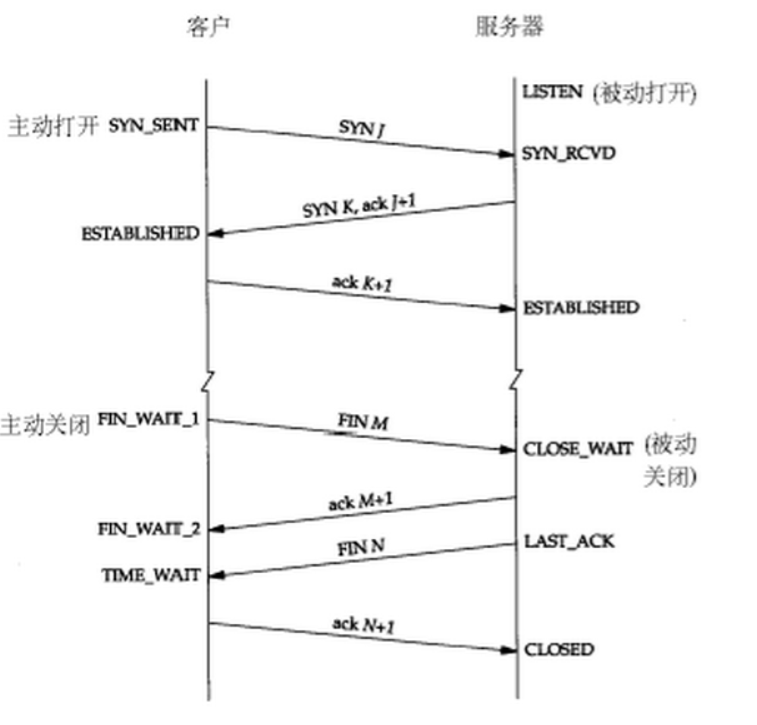

TCP三握四挥
TCP
TCP(Transmission Control Protocol)传输控制协议，TCP属于网络分层中的传输层，它面向有连接的通信传输，面向有连接是指在传送数据之前必须先建立连接，数据传送完成之后要释放连接。
TCP的状态转换

LISTEN - 侦听来自远方TCP端口的连接请求；
SYN-SENT -在发送连接请求后等待匹配的连接请求；
SYN-RECEIVED - 在收到和发送一个连接请求后等待对连接请求的确认；
ESTABLISHED- 代表一个打开的连接，数据可以传送给用户；
FIN-WAIT-1 - 等待远程TCP的连接中断请求，或先前的连接中断请求的确认；
FIN-WAIT-2 - 从远程TCP等待连接中断请求；
CLOSE-WAIT - 等待从本地用户发来的连接中断请求；
CLOSING -等待远程TCP对连接中断的确认；
LAST-ACK - 等待原来发向远程TCP的连接中断请求的确认；
TIME-WAIT -等待足够的时间以确保远程TCP接收到连接中断请求的确认；
CLOSED - 没有任何连接状态；
三次握手（建立连接）
四次挥手（断开连接）
深入理解TCP
由于TCP连接是全双工的，因此每个方向都必须单独进行关闭。比如当客户端向服务器端发送FIN后，只关闭了客户端到服务器的发送通道，服务器仍能向客户端发送数据。
简单说来是 “先关读，后关写”，一共需要四个阶段。以客户机发起关闭连接为例：
1.服务器读通道关闭
2.客户机写通道关闭
3.客户机读通道关闭
4.服务器写通道关闭
具体过程为当服务器收到FIN后，返回确认段ACK,关闭服务器读通道。当客户端收到ACK后，关闭客户端写通道。
(此时只关闭了客户端到服务器的写，服务器到客户端的读。所以仍能进行客户端到服务器的读，服务器到客户端的写)
当客户端收到来自服务器的FIN后，返回确认段ACK,关闭客户端读通道。当服务器收到ACK后，关闭服务器写通道。